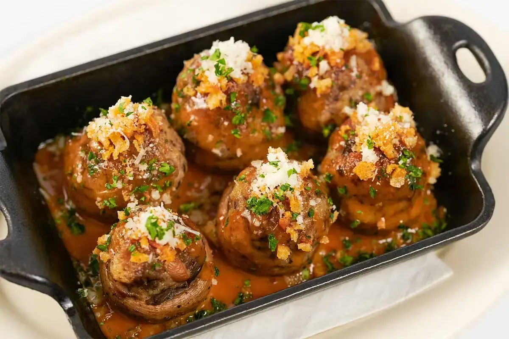
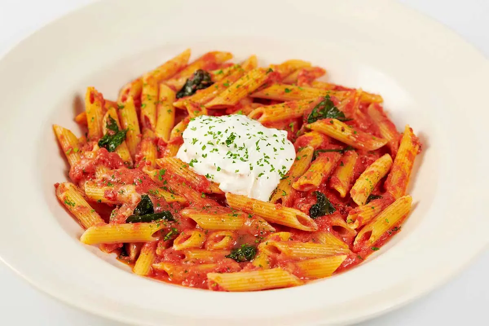
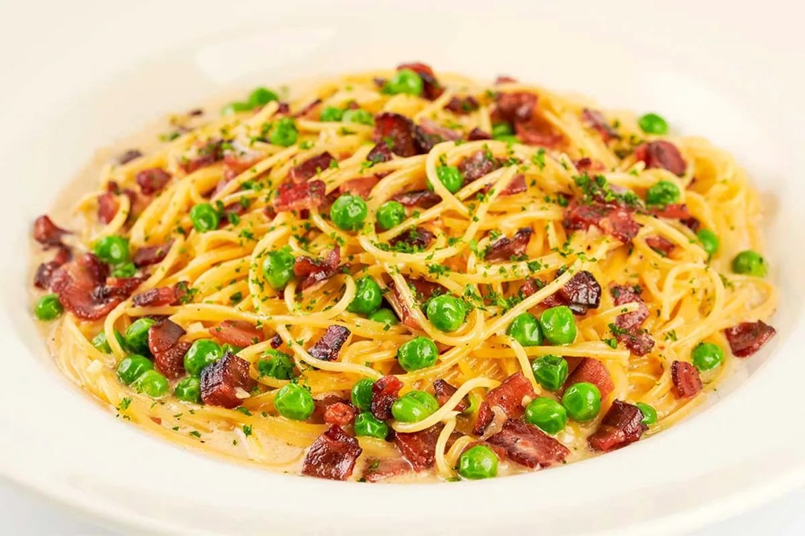
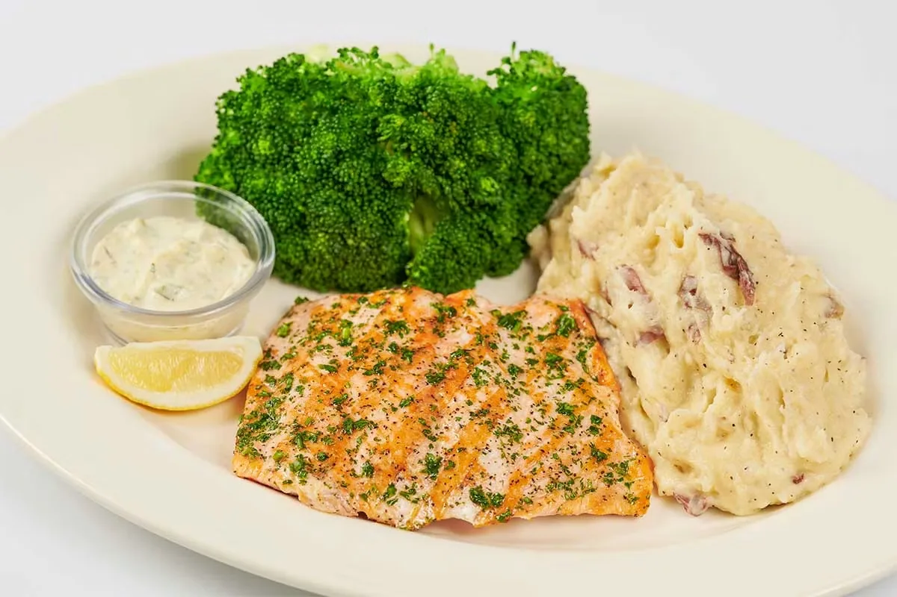
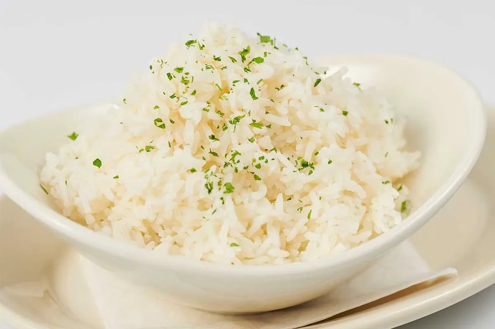
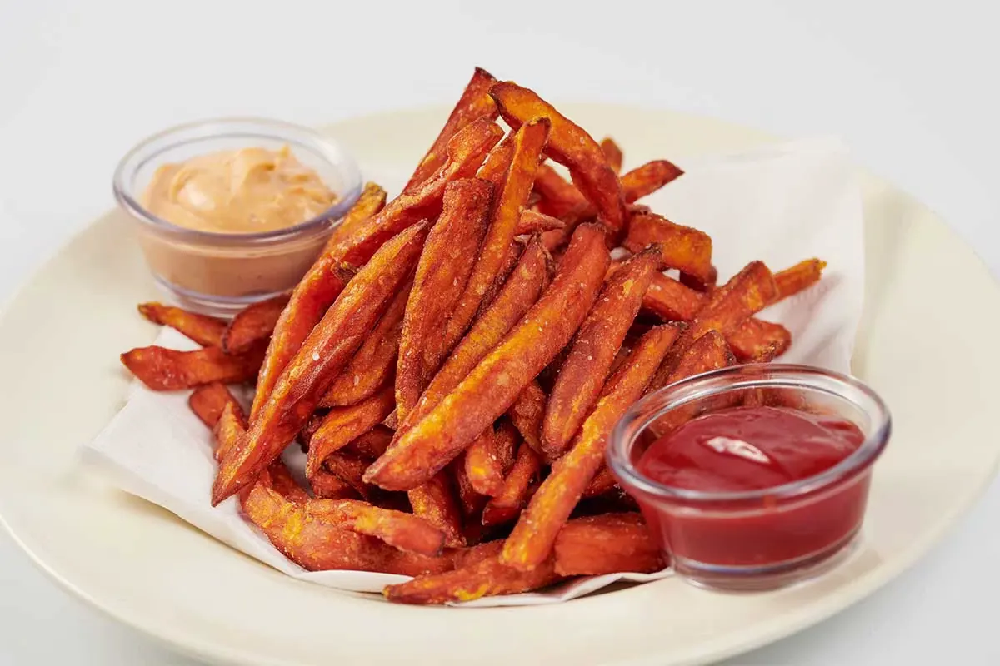
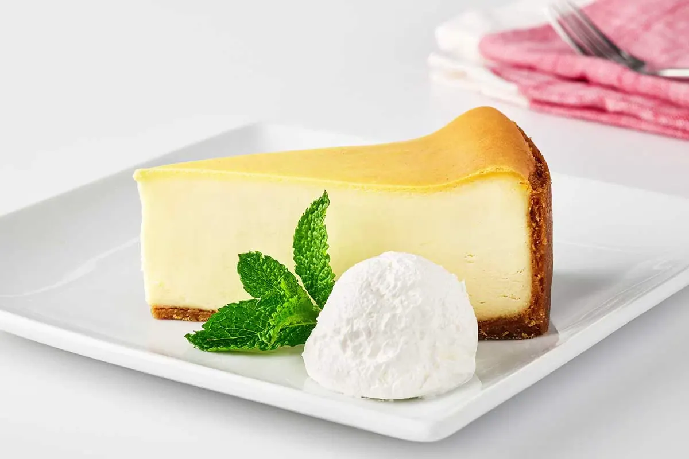
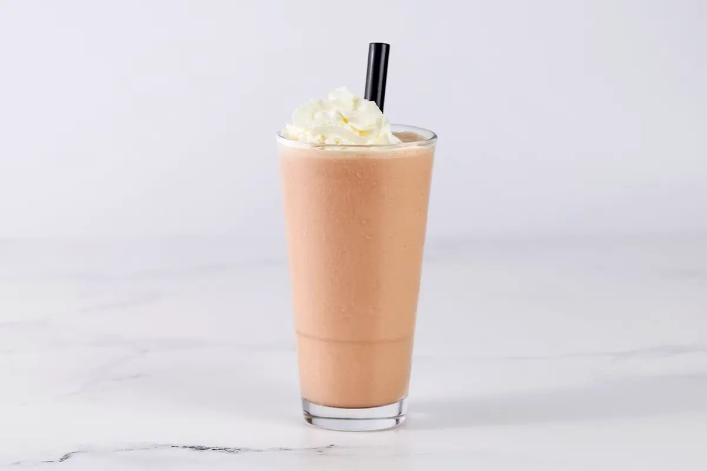
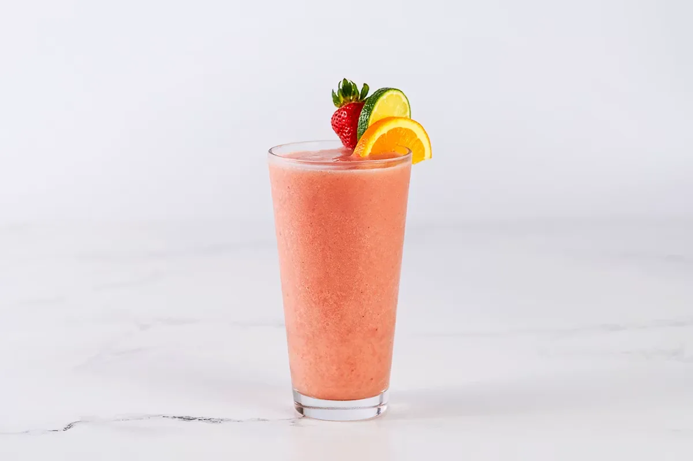

Cheesecake Factory Gluten-Free Menu: Every Safe Item, Price & Calorie Guide (July 2026)
Can you actually eat gluten-free at The Cheesecake Factory without gambling on a reaction? Mostly yes, and this page breaks down exactly how: every gluten-free appetizer, burger, pasta, entree, dessert, and drink on the menu as of July 2026, with prices, calories, and the honest cross-contamination risks for each category.
Prices and gluten-free substitutions can vary by location, and a few items carry a small upcharge for the swap. The Cheesecake Factory does not run a dedicated gluten-free kitchen, so if you have celiac disease rather than a general sensitivity, read the safety notes in each section before you order.
For the complete lineup, browse the full Cheesecake Factory menu, and check Happy Hour for gluten-free-friendly appetizers at a discount.
Download the Gluten-Free Menu PDF
Every gluten-free item, price, and calorie count on this page in one free, printable PDF.
Is The Cheesecake Factory gluten-free friendly?
Yes, with an important caveat. The Cheesecake Factory marks gluten-free items on its menu and trains staff to walk guests through safe options, but the restaurant states plainly that it is not an allergen-free or gluten-free environment. Kitchens use shared fryers, shared prep surfaces, and shared pasta water in some cases, so cross-contact is possible even on a dish ordered as gluten-free. For a general gluten sensitivity, the menu gives you real variety. For celiac disease, treat every dish as a calculated risk rather than a guarantee, and speak to a manager if you need extra precautions.
Gluten-free risk level by category
| Category | Risk level | Notes |
|---|---|---|
| Grilled steaks, chicken, fish | Lowest | No breading or flour-based sauce when ordered plain |
| Salads (no croutons) | Lowest | Confirm dressing from the safe list below |
| Cheesecake (3 flavors) | Low-Moderate | Stored alongside regular cakes; separate utensils used |
| Gluten-free pasta | Moderate | Cooked in separate water, but same kitchen |
| Burgers with GF bun | Moderate | Bun is separate; toppings and sauces vary by burger |
| Fried items (fries, wings) | Highest | Shared fryer with breaded, gluten-containing foods |
Gluten-free appetizers and starters
These starters are marked gluten-free on the standard menu or convert with one small change, giving you something to order while the table decides on entrees.

Sweet Corn Tamale Cakes
Sweet corn forms the base of these tamale cakes, giving them a soft, slightly sweet texture that holds together without any wheat-based binder. This is one of the easier gluten-free starters to order since the modification is minimal.
Main ingredients: Sweet corn, masa, seasonings, garnish (confirm current garnish with your server)
Customization: Ask your server to confirm the current gluten-free prep, since recipes are updated periodically

Stuffed Mushrooms
Mushroom caps are stuffed with a savory filling and baked rather than fried, which keeps this appetizer out of the shared-fryer risk zone that affects several other starters on the menu.
Main ingredients: Mushroom caps, savory stuffing, cheese

Beet and Avocado Salad
This is a cold, plated starter built from roasted beets and fresh avocado, which makes it one of the lowest-risk appetizers on the entire menu since nothing here touches a fryer or shared pasta water.
Main ingredients: Roasted beets, avocado, greens, dressing
Customization: Confirm the dressing is one of the gluten-free options listed below, since not every dressing on the menu qualifies

Buffalo Wings
The wings themselves are listed as a gluten-free option, but they're cooked in the same fryer used for breaded items elsewhere on the menu. If cross-contact from shared frying oil is a concern for you, this is a higher-risk pick than the baked starters above.
Main ingredients: Chicken wings, buffalo sauce
Customization: Ask for sauce on the side and confirm current fryer protocol with your server
Gluten-free salads and safe dressings
Salads are one of the safest categories on the menu, provided you skip croutons and pick the right dressing. The base greens and most proteins here carry no gluten risk on their own.

Santa Fe Salad
Grilled chicken sits over a Southwest-style mix of black beans, corn, and avocado, which keeps this salad hearty enough to work as a full entree rather than a side dish.
Main ingredients: Grilled chicken, mixed greens, black beans, corn, avocado, tortilla strips
Customization: Order it without the crispy tortilla strips to keep it gluten-free, since those are wheat-based
Gluten-free salad dressings
| Gluten-free dressings | Dressings to confirm first |
|---|---|
| Barbecue Ranch | Thai Vinaigrette (may contain soy sauce) |
| Blue Cheese | Sesame Soy Dressing (soy sauce base) |
| Caesar | Any dressing not listed as GF |
| Citrus Honey | |
| Ranch | |
| Thousand Island |
Dressings outside the confirmed list may use soy sauce or other gluten-based thickeners, so it's worth asking your server rather than assuming.
Burgers on a gluten-free bun
Any burger on the Glamburgers or SkinnyLicious menu can be ordered with a gluten-free bun, which opens up the entire burger lineup rather than limiting gluten-free diners to one or two pre-approved builds.

Any Glamburger or SkinnyLicious Burger, GF Bun
Prices follow the standard burger you order, typically $16.95 to $19.95 for Glamburgers and $17.95 to $19.50 for SkinnyLicious. Gluten-free buns are available on request rather than automatic, and some locations charge a small upcharge, usually $1.50 to $2.00, for the substitution. The patty itself is naturally gluten-free on beef and turkey burgers; confirm current sauce ingredients if the burger includes a specialty sauce.
Customization: Request the gluten-free bun when you order, not after the burger arrives, since kitchens prep it separately
Ordering note: If fries come standard with your burger, ask about the shared fryer before assuming they're safe for a strict gluten-free order
Gluten-free pasta
The Cheesecake Factory offers a dedicated gluten-free fusilli that can be substituted into several of its classic pasta dishes, cooked in separate water to reduce cross-contact with regular pasta.

Four Cheese Pasta, Gluten-Free Fusilli
Four cheeses melt into a rich sauce that coats the gluten-free fusilli differently than it would coat the restaurant's usual pasta shapes, giving the dish a slightly different texture than the standard version but the same core flavor.
Main ingredients: Gluten-free fusilli, four-cheese sauce
Customization: Request the pasta cooked in separate water when you order, and mention celiac disease specifically if that level of precaution matters to you

Pasta Carbonara, Gluten-Free Fusilli
Bacon, egg, and parmesan build the classic carbonara sauce here, and swapping in the gluten-free fusilli keeps the core flavor intact while removing the wheat pasta that would otherwise carry gluten.
Main ingredients: Gluten-free fusilli, bacon, egg, parmesan cream sauce
Naturally gluten-free steaks, chicken and seafood
Grilled proteins are the lowest-risk entree category on the menu, since a plain grilled cut of meat or fish has no wheat-based ingredients unless a sauce is added on top.

Grilled Salmon
A simply grilled salmon fillet without a heavy sauce or breading, this is one of the most straightforward gluten-free orders on the entire menu and a reliable fallback if you're unsure about anything else on the table's order.
Main ingredients: Salmon fillet, seasoning, choice of side

Filet Mignon
This is the leanest steak on the menu by calorie count, grilled without a flour-thickened sauce, which makes it one of the safest higher-end entrees for a gluten-free order.
Main ingredients: Filet mignon, seasoning, choice of side
Customization: Skip any Madeira or cream-based sauce add-on, since some sauces use flour as a thickener

Grilled Rib-Eye Steak
A larger, more marbled cut than the filet, this rib-eye is grilled plain and pairs with the same side options as the rest of the steak menu, giving you a heartier gluten-free choice without extra risk.
Main ingredients: Rib-eye steak, seasoning, choice of side
Gluten-free side dishes
Sides split clearly into two risk tiers here: steamed or plain-grilled vegetables carry almost no risk, while anything fried shares oil with breaded, gluten-containing items.

Steamed White Rice or Brown Rice
A plain steamed rice side with no added sauce, this is about as low-risk as a side dish gets on this menu.

Grilled Asparagus
Grilled without breading or a flour-based glaze, asparagus is one of the safer vegetable sides if you're avoiding gluten strictly.

French Fries
The fries themselves don't contain gluten ingredients, but they're cooked in a shared fryer alongside breaded chicken and other items that do. If a strict gluten-free order matters to you, ask whether a dedicated fryer or fresh oil is available before ordering.
Gluten-free cheesecake and dessert options
Dessert is the category where gluten-free diners have to be most careful, since most of the menu's namesake cheesecakes use a graham cracker crust. Three flavors break from that pattern.

Godiva® Chocolate Cheesecake
Flourless chocolate cake forms the base here instead of a graham cracker crust, topped with Godiva chocolate cheesecake and chocolate mousse. It's the richest of the three gluten-free cheesecake options and consistently the most ordered.
Main ingredients: Flourless chocolate cake, chocolate cheesecake, chocolate mousse
Ordering note: This dessert is stored in the same display case as gluten-containing cheesecakes. Staff use separate utensils, but ask about current protocol if you're highly sensitive

Low-Licious Cheesecake
Made with no added sugar and a lighter overall build, this is both the lowest-calorie cheesecake on the menu and one of the three gluten-free options, using a gluten-free graham cracker base instead of the standard crust.
Main ingredients: Gluten-free graham cracker crust, no-sugar-added cheesecake filling

Low-Licious Cheesecake with Strawberries
The same gluten-free, no-sugar-added base as the standard Low-Licious Cheesecake, topped with fresh strawberries for a lighter, fruit-forward finish.
Main ingredients: Gluten-free graham cracker crust, no-sugar-added cheesecake filling, fresh strawberries
Gluten-free drinks and milkshakes
Most of the drink menu is gluten-free by nature, since coffee, tea, soda, and fruit-based smoothies don't involve wheat ingredients.

Creamy Milkshakes
Chocolate, vanilla, and strawberry are the three milkshake flavors listed as gluten-free. The Oreo Milkshake is not included in that group, since Oreo cookies contain wheat.
Main ingredients: Ice cream, milk, flavored syrup

Fruit Smoothies
Strawberry Fruit Smoothie, Tropical Smoothie, Peach Smoothie, and Frozen Iced Mango are all blended from real fruit, juice, and ice with no gluten-containing ingredients.
Main ingredients: Fresh fruit, fruit juice, ice
Gluten-free breakfast and brunch
Eggs and grilled breakfast proteins make up the safest part of the breakfast and weekend brunch menu, while anything fried or wrapped in a tortilla needs a closer look.

Farm Fresh Eggs
A straightforward plate of eggs cooked to order, this is one of the simplest gluten-free breakfast choices, especially paired with a protein like bacon or ham instead of the standard toast.
Customization: Swap the included toast for a side of fruit or breakfast potatoes if you want to stay gluten-free without asking for a special bread substitute

Jambalaya Hash and Eggs
Served on the Saturday and Sunday brunch menu, this hash combines eggs with a Cajun-spiced protein and vegetable mix, making it a heartier gluten-free brunch option than a plain egg plate.
Main ingredients: Eggs, Cajun-seasoned hash, vegetables
Ordering note: Breakfast potatoes served alongside brunch items are typically cooked in a shared fryer, so ask about current oil use if that matters for your order
How to order gluten-free at The Cheesecake Factory
- Say "gluten-free," not just "no bread." Being specific tells the kitchen to apply their actual gluten-free protocol rather than just skipping a bun
- Check the online allergen guide before you go. The Cheesecake Factory's allergen filter lets you search by ingredient, including wheat, so you can build a shortlist before you sit down
- Ask about the fryer. Several gluten-free-friendly items, including fries and wings, are cooked in oil shared with breaded foods
- Request gluten-free pasta or a gluten-free bun at the time of ordering. These are made-to-order substitutions, not default preparations, and asking early avoids a remake
- Speak to a manager for celiac-level precautions. Servers can walk you through safe menu picks, but a manager can confirm what extra steps the kitchen is willing to take
Frequently asked questions
It can work for many guests with celiac disease, but the restaurant does not operate a dedicated gluten-free kitchen, so cross-contact is possible even on gluten-free orders. If you have celiac disease, speak with a manager about precautions before ordering.
There's no separate printed gluten-free menu, but the standard menu marks gluten-free items and the restaurant maintains an online allergen guide you can filter by ingredient.
The standard bread basket is not gluten-free. Most locations offer a gluten-free bread substitute on request, though it's a different product than the restaurant's usual bread.
The fries themselves don't contain gluten ingredients, but they're cooked in a shared fryer with breaded items, which creates a cross-contact risk for strict gluten-free orders.
Yes. The Godiva Chocolate Cheesecake, Low-Licious Cheesecake, and Low-Licious Cheesecake with Strawberries are all gluten-free, though they're stored in the same case as regular cheesecakes.
Yes, gluten-free buns are available on request for any burger on the menu, sometimes with a small upcharge depending on location.
Regular pasta is not gluten-free, but the restaurant offers a gluten-free fusilli that can be substituted into several classic pasta dishes, cooked in separate water.
Barbecue Ranch, Blue Cheese, Caesar, Citrus Honey, Ranch, and Thousand Island are listed as gluten-free. Other dressings may contain gluten-based thickeners.
Sometimes. Gluten-free buns and pasta can carry a small upcharge, typically $1.50 to $2.00, depending on the location.
The Chocolate, Vanilla, and Strawberry milkshakes are gluten-free. The Oreo Milkshake is not, since it contains Oreo cookies.
Some kids menu items can be prepared gluten-free, including options with grilled protein and plain sides. Ask your server which current kids items qualify at your location.
A grilled protein like salmon, filet mignon, or grilled chicken paired with steamed rice or a plain vegetable side carries the lowest cross-contact risk on the entire menu.
Final thoughts
The Cheesecake Factory gives gluten-free diners real options across nearly every category, from a dedicated gluten-free pasta to three cheesecake flavors that skip the graham cracker crust. The tradeoff is that none of it happens in a dedicated gluten-free kitchen, so shared fryers and shared prep space remain a real factor. For general gluten sensitivity, the menu holds up well. For celiac disease, lean on grilled proteins, steamed sides, and a direct conversation with your server or a manager before you order.
Cross-check with our allergen guide for other dietary concerns, or browse the salads menu for more gluten-free-friendly options.